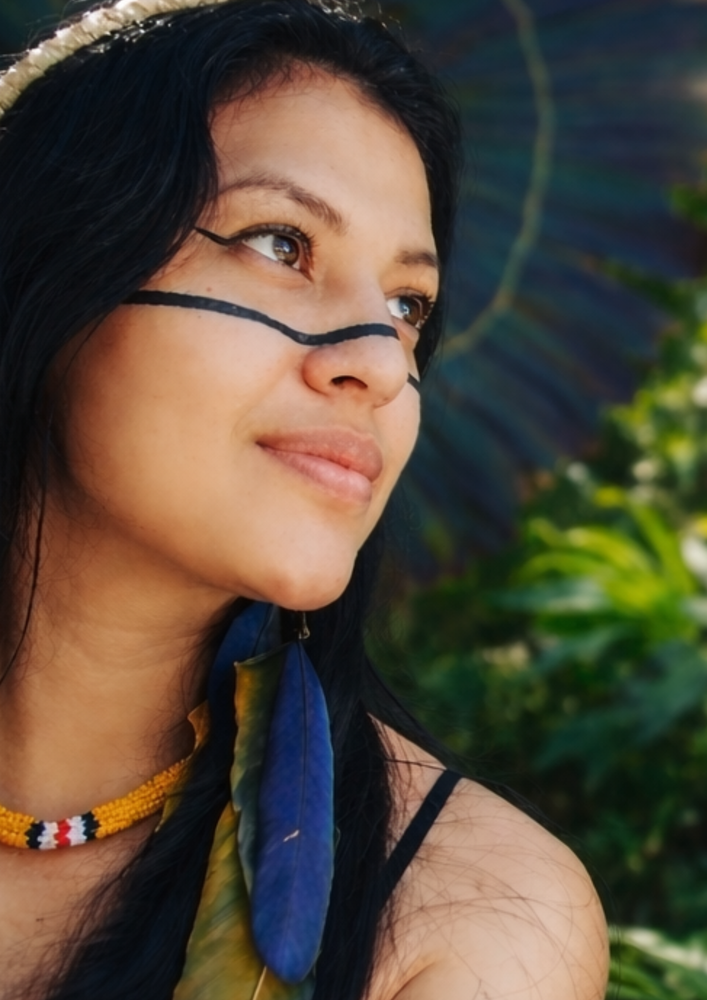

Apresentação
Sobre a Idealizadora

Ana Léia Djrôdya Ferraz dos Anjos
Nascida em 21 de janeiro de 1999, na cidade de Peruíbe - SP, Ana Léia constrói sua trajetória a partir do profundo respeito pela arte, cultura e ancestralidade.
Sua visão para esta galeria nasce do desejo de criar um espaço onde memória, identidade e expressão artística dialoguem de forma sensível, acolhedora e contemporânea.
Mais do que um ambiente expositivo, este projeto representa um lugar de pertencimento, contemplação e conexão entre passado, presente e futuro.
“A arte é memória viva e ponte entre gerações.”
Educação e tecnologia unidas pela preservação das raízes brasileiras.
Este site possui recurso de acessibilidade em Libras.